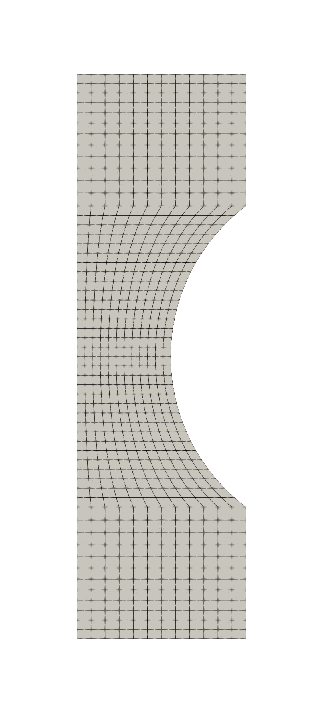
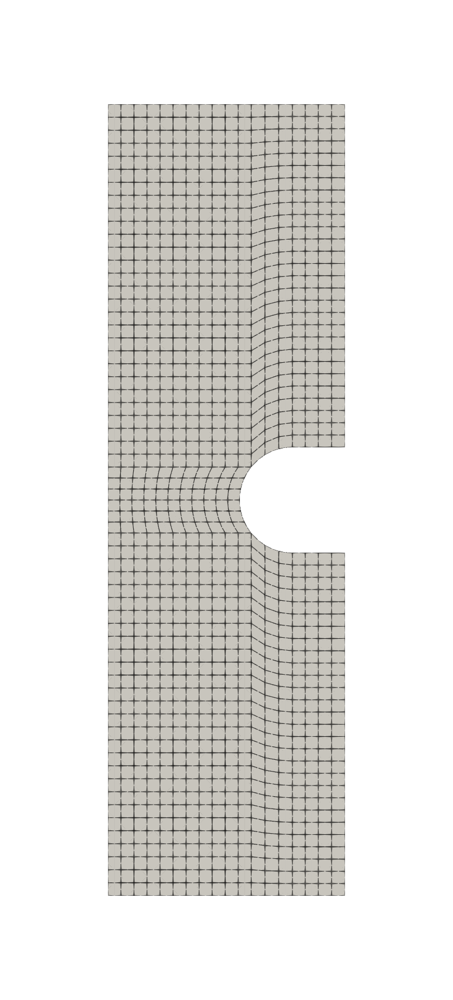
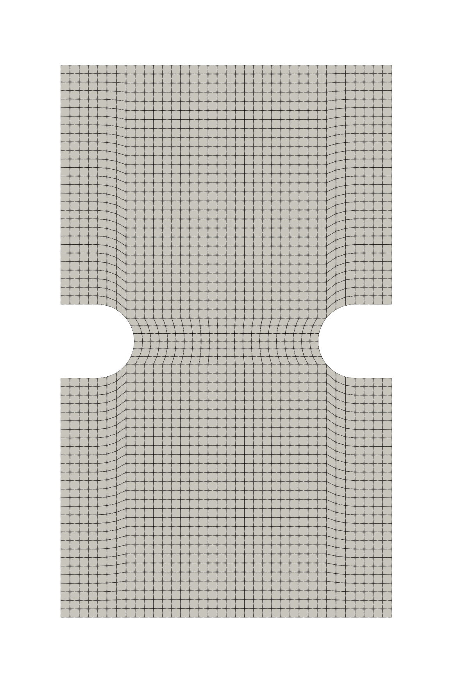
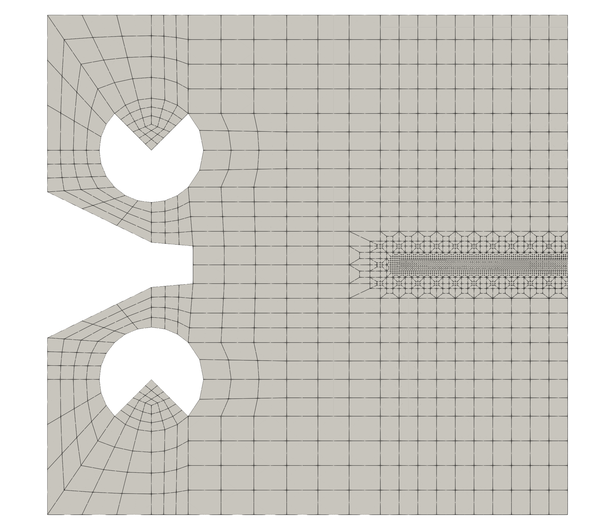

Finite element Cast3M simulations
have been performed on various meshes to generate vtu files and test
failure criteria.
The Cast3M scripts can be run as follows:
The mesh associated with the different samples are available in med
files usable with other finite element solvers for benchmark.
All simulations have been performed using constitutive equations
corresponding to:
- Isotropic elasticity, with a Young’s modulus \(E=200000\) and Poisson ratio \(\nu=0.3\)
- von Mises plasticity with isotropic hardening \(R(p) = 500 + 300[1-\exp{(-10p)}]\)
- Hencky finite strain framework
The corresponding mfront file (ldc.mfront) should be compiled before
running the Cast3M script as follows:
mfront --obuild --interface=castem21 *.mfront
The following mechanical quantities have been computed per
timestep:
- SIG: stress components in Voigt notation
- ETO: strain components in Voigt notation
- P: cumulated plastic strain
- VOLU: local volume
All simulations have been postprocessed to generate two vtu files per
timestep:
- PointData: all mechanical quantities are stored at Gauss points
- CellData: all mechanical quantities are averaged per elements
and analysed using all available fracture criteria:
Test n°1:
Axisymmetric smooth notched tensile

Mesh
Load - displacement curve
Maximal damage - displacement
curve
Global fracture probability -
displacement curve
Test n°2:
Axisymmetric deep notched tensile

Mesh
Load - displacement curve
Maximal damage - displacement
curve
Global fracture probability -
displacement curve
Test
n°3: Plane strain notched sample under tensile loading

Mesh
Load - displacement curve
Maximal damage - displacement
curve
Global fracture probability -
displacement curve
Test
n°4: Plane strain notched sample under shear loading
Mesh
Load - displacement curve
Maximal damage - displacement
curve
Global fracture probability -
displacement curve
Test n°5: Compact Tension
sample

Mesh
Load - displacement curve
Maximal damage - displacement
curve
Global fracture probability -
displacement curve
References